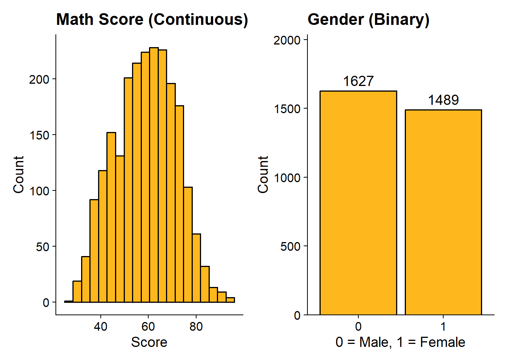
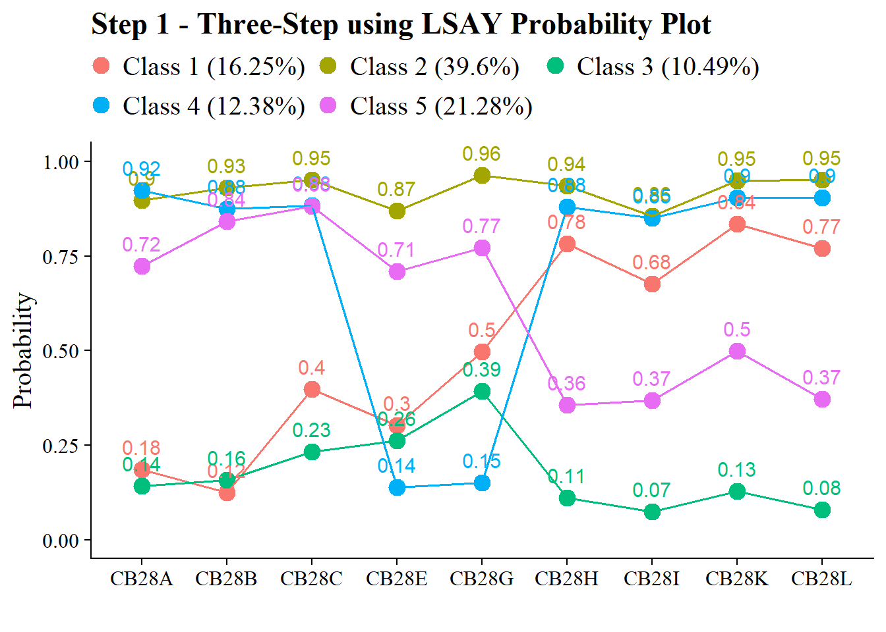
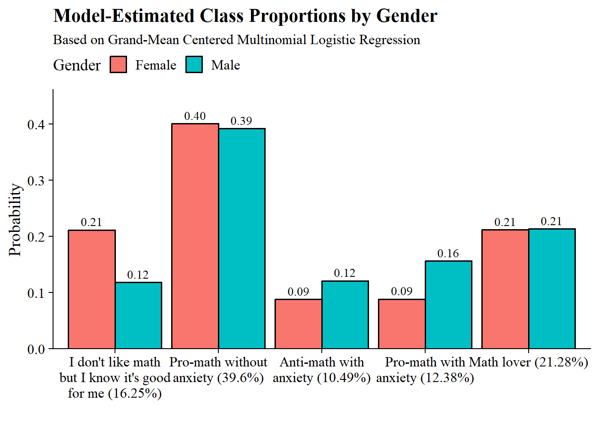
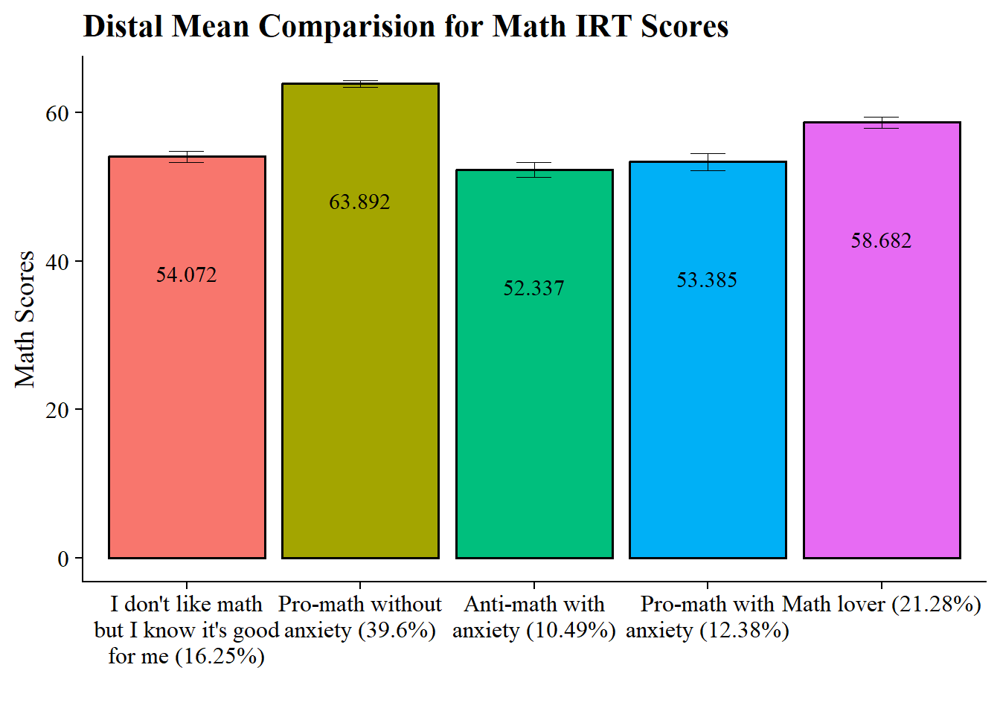

Latent Class Regression
Last Updated: 2026-04-03
Latent Class Regression
library(tidyverse)
library(MplusAutomation)
library(haven)
library(here)
library(sjPlot)
library(glue)
library(cowplot)
library(DiagrammeR)
library(patchwork)
library(gt)Data Wrangling
Read in .csv
lsay_csv <- read_csv(here("data", "lsay_cleaned.csv")) %>%
mutate(
across(c(-CASENUM, COHORT), ~ if_else(.x %in% c(-99, -98, -96, -95), NA_real_, .x))
) %>%
mutate(
across(
c(CB28A, CB28B, CB28C, CB28H, CB28I, CB28K, CB28L),
~ case_when(
.x %in% c(1, 2) ~ 1,
.x %in% c(3, 4, 5) ~ 0,
TRUE ~ NA_real_
)
),
across(
c(CB28E, CB28G),
~ case_when(
.x %in% c(1, 2, 3) ~ 0, # Reverse coding
.x %in% c(4, 5) ~ 1,
TRUE ~ NA_real_
)
)
) %>%
filter(COHORT == 2) # Filter Cohort 2 (N = 3116)Auxiliary Variables
| Variable | Value Labels |
|---|---|
| EMTHIRT (Distal Outcome) | 9th Grade Math IRT Score |
| FEMALE (Covariate) | Self-reported student gender (0=Male, 1=Female). |
Descriptive Statistics
Frequency
## EMTHIRT FEMALE
## Min. :26.60 0:1627
## 1st Qu.:49.97 1:1489
## Median :59.30
## Mean :58.82
## 3rd Qu.:68.28
## Max. :94.27
## NA's :875Plot
# Math IRT
p1 <- ggplot(lsay_csv, aes(x = EMTHIRT)) +
geom_histogram(fill = "#FEB81D", color = "black", bins = 20) +
labs(title = "Math Score (Continuous)", x = "Score", y = "Count") +
theme_cowplot()
# Female
p2 <- ggplot(lsay_csv, aes(x = factor(FEMALE))) +
geom_bar(fill = "#FEB81D", color = "black") +
geom_text(stat = "count", aes(label = after_stat(count)), vjust = -0.5) +
labs(title = "Gender (Binary)", x = "0 = Male, 1 = Female", y = "Count") +
scale_y_continuous(expand = expansion(mult = c(0, 0.25))) +
theme_cowplot()
# Combine them side-by-side
p1 + p2
Manual ML Three-step
Step 1 - Class Enumeration w/ Auxiliary Specification
This step is done after class enumeration (or after you have selected
the best latent class model). In this example, the four class model was
the best. Now, we re-estimate the five-class model using
optseed for efficiency. The difference here is the
SAVEDATA command, where I can save the posterior
probabilities and the modal class assignment that will be used in steps
two and three.
step1 <- mplusObject(
TITLE = "Step 1 - Three-Step using LSAY",
VARIABLE =
"categorical = CB28A CB28B CB28C CB28E CB28G CB28H CB28I CB28K CB28L;
usevar = CB28A CB28B CB28C CB28E CB28G CB28H CB28I CB28K CB28L;
classes = c(5);
auxiliary = ! list all potential covariates and distals here
FEMALE ! covariate
EMTHIRT; ! distal math test score in 12th grade ",
ANALYSIS =
"estimator = mlr;
type = mixture;
starts = 0;
optseed = 345726;",
SAVEDATA =
"File=savedata.dat;
Save=cprob;",
OUTPUT = "residual tech11 tech14",
usevariables = colnames(lsay_csv),
rdata = lsay_csv)
step1_fit <- mplusModeler(step1,
dataout=here("three_step", "Step1.dat"),
modelout=here("three_step", "one.inp") ,
check=TRUE, run = TRUE, hashfilename = FALSE)Plot LCA
Class 1 = I don’t like math but I know it’s good for me (16.25%) Class 2 = Pro-math without anxiety (39.6%) Class 3 = Anti-math with anxiety (10.49%) Class 4 = Pro-math with anxiety (12.38%) Class 5 = Math lover (21.28%)
source(here("functions", "plot_lca.R"))
output_one <- readModels(here("three_step", "one.out"))
plot_lca(model_name = output_one)
Check that log-likelihood values are the same
## [1] -12548.94## [1] -12548.94Step 2 - Determine Measurement Error
Extract logits for the classification probabilities for the most likely latent class
## 1 2 3 4 5
## 1 2.693 -0.328 -0.504 -0.316 0
## 2 -0.748 3.095 -8.980 -1.265 0
## 3 -0.265 -6.861 2.548 -4.052 0
## 4 -0.144 1.356 -4.438 2.688 0
## 5 -2.782 -1.878 -3.031 -3.014 0Extract saved dataset from step one
savedata <- as.data.frame(output_one$savedata) %>%
rename(N = MLCC) #Rename the column in savedata named "MLCC" and change to "N"Check variable names in savedata (Mplus will cut off variable names that are longer than 8 characters)
## [1] "CB28A" "CB28B" "CB28C" "CB28E" "CB28G" "CB28H" "CB28I"
## [8] "CB28K" "CB28L" "FEMALE" "EMTHIRT" "CPROB1" "CPROB2" "CPROB3"
## [15] "CPROB4" "CPROB5" "N"Step 3 - LCA Auxiliary Variable Model with 2 covariates and 1 distal outcome
Model with 1 covariate (FEMALE) and 1 distal outcome (Math IRT scores)
step3 <- mplusObject(
TITLE = "Step 3 - Three-Step using LSAY",
VARIABLE =
"nominal=N;
classes = c(5);
usevar = N FEMALE EMTHIRT;" , # Add covariates and distal outcomes in addition to `N` here
ANALYSIS =
"estimator = mlr;
type = mixture;
starts = 0;",
DEFINE =
"center FEMALE (grandmean);",
MODEL =
glue(
" %OVERALL%
EMTHIRT on FEMALE; ! covariate as a related to the distal outcome
C on female (f1-f4);
%C#1%
[n#1@{logit_cprobs[1,1]}]; ! MUST EDIT if you do not have a 5-class model.
[n#2@{logit_cprobs[1,2]}];
[n#3@{logit_cprobs[1,3]}];
[n#4@{logit_cprobs[1,4]}];
[EMTHIRT](m1); ! conditional distal mean
EMTHIRT; ! conditional distal variance (freely estimated)
%C#2%
[n#1@{logit_cprobs[2,1]}];
[n#2@{logit_cprobs[2,2]}];
[n#3@{logit_cprobs[2,3]}];
[n#4@{logit_cprobs[2,4]}];
[EMTHIRT](m2);
EMTHIRT;
%C#3%
[n#1@{logit_cprobs[3,1]}];
[n#2@{logit_cprobs[3,2]}];
[n#3@{logit_cprobs[3,3]}];
[n#4@{logit_cprobs[3,4]}];
[EMTHIRT](m3);
EMTHIRT;
%C#4%
[n#1@{logit_cprobs[4,1]}];
[n#2@{logit_cprobs[4,2]}];
[n#3@{logit_cprobs[4,3]}];
[n#4@{logit_cprobs[4,4]}];
[EMTHIRT](m4);
EMTHIRT;
%C#5%
[n#1@{logit_cprobs[5,1]}];
[n#2@{logit_cprobs[5,2]}];
[n#3@{logit_cprobs[5,3]}];
[n#4@{logit_cprobs[5,4]}];
[EMTHIRT](m5);
EMTHIRT;
"),
MODELCONSTRAINT =
"New (
! Distal mean differences (10 total for 5 classes)
diff12 diff13 diff14 diff15
diff23 diff24 diff25
diff34 diff35
diff45
);
! Distal mean comparisons
diff12 = m1-m2;
diff13 = m1-m3;
diff14 = m1-m4;
diff15 = m1-m5;
diff23 = m2-m3;
diff24 = m2-m4;
diff25 = m2-m5;
diff34 = m3-m4;
diff35 = m3-m5;
diff45 = m4-m5;
",
MODELTEST = " ! omnibus test of distal means
m1=m2;
m2=m3;
m3=m4;
m3=m5;
!f1=0; ! omnibus test of covariate logits (female)
!f2=0;
!f3=0;
!f4=0;
",
usevariables = colnames(savedata),
rdata = savedata)
step3_fit <- mplusModeler(step3,
dataout=here("three_step", "Step3.dat"),
modelout=here("three_step", "three_distal.inp"),
check=TRUE, run = TRUE, hashfilename = FALSE)Rerun model with different model test:
# Update the model test by overwriting string
step3$MODELTEST <- "f1=0; f2=0; f3=0; f4=0;"
# Then run it again
mplusModeler(step3,
dataout=here("three_step", "Step3.dat"),
modelout=here("three_step", "three_female.inp"),
check=TRUE, run = TRUE, hashfilename = FALSE)Compare Step 1 classes and Step 3 classes
## class count proportion
## 1 1 434.7826 0.16254
## 2 2 1059.2478 0.39598
## 3 3 280.5347 0.10487
## 4 4 331.2885 0.12385
## 5 5 569.1464 0.21277output_three <- readModels(here("three_step", "three_distal.out"))
output_three$class_counts$modelEstimated## class count proportion
## 1 1 436.5933 0.16321
## 2 2 1059.5331 0.39609
## 3 3 280.1920 0.10474
## 4 4 330.0468 0.12338
## 5 5 568.6349 0.21257NOTE: If there are notable differences between class formation in the Step 1 and the Step 3 models (aside from label-switching), it means there are one of more covariates included in the Step 3 model that may be sources of unaccounted-for DIF
Visualizations
Wald Test Table
This is testing if there is a relation between the latent class variable and the distal outcome.
Note: There are two outputs, each containing separate Wald tests (one for Math IRT scores and the other for self-reported gender). However, other than the Wald test, the outputs are identical. Either can be used for subsequent code.
# Make a Wald table function
wald_table <- function(mplus_model, table_title) {
# Read the model
model_output <- mplus_model
# Extract information as data frame
wald <- as.data.frame(model_output[["summaries"]]) %>%
dplyr::select(WaldChiSq_Value:WaldChiSq_PValue) %>%
mutate(WaldChiSq_DF = paste0("(", WaldChiSq_DF, ")")) %>%
unite(wald_test, WaldChiSq_Value, WaldChiSq_DF, sep = " ") %>%
rename(pval = WaldChiSq_PValue) %>%
mutate(pval = ifelse(pval<0.001, paste0("<.001*"),
ifelse(pval<0.05, paste0(scales::number(pval, accuracy = .001), "*"),
scales::number(pval, accuracy = .001))))
# Create the gt table
wald %>%
gt() %>%
tab_header(
title = table_title) %>%
cols_label(
wald_test = md("Wald Test (*df*)"),
pval = md("*p*-value")) %>%
cols_align(align = "center") %>%
opt_align_table_header(align = "left") %>%
gt::tab_options(table.font.names = "serif")
}Use wald_table funtion
output_three_distal <- readModels(here("three_step", "three_distal.out"))
output_three_female <- readModels(here("three_step", "three_female.out"))
wald_table(output_three_distal, "Wald Test Distal Means (Math IRT Scores)")| Wald Test Distal Means (Math IRT Scores) | |
| Wald Test (df) | p-value |
|---|---|
| 223.193 (4) | <.001* |
| Wald Test Distal Means (Female) | |
| Wald Test (df) | p-value |
|---|---|
| 35.428 (4) | <.001* |
Note: There are two outputs, each containing separate Wald tests (one for Math IRT scores and the other for self-reported gender). However, other than the Wald test, the outputs are identical. Either can be used for subsequent code.
Table of Covariates Relations
Make predictor_table function
# Make a predictor table function
predictor_table <- function(mplus_output,
ref_class = "5",
var_labels = NULL,
table_title = "Predictors of Class Membership") {
# Extract Unstandardized Logits
cov_data <- as.data.frame(mplus_output[["parameters"]][["unstandardized"]]) %>%
filter(str_detect(paramHeader, "^C#\\d+\\.ON$")) %>%
mutate(
# Use the provided labels, otherwise default to Title Case
param_label = if (!is.null(var_labels)) {
str_replace_all(param, var_labels)
} else {
str_to_title(param)
},
latent_class = str_replace(paramHeader, "^C#(\\d+)\\.ON$", "Class \\1")
) %>%
mutate(
logit = paste0(format(round(est, 3), nsmall = 3), " (", format(round(se, 2), nsmall = 2), ")"),
pval_label = case_when(
pval < 0.001 ~ "<.001*",
pval < 0.05 ~ paste0(scales::number(pval, accuracy = .001), "*"),
TRUE ~ scales::number(pval, accuracy = .001)
)
) %>%
dplyr::select(param_label, latent_class, logit, pval_label)
# Extract Odds Ratios
or_data <- as.data.frame(mplus_output[["parameters"]][["odds"]]) %>%
filter(str_detect(paramHeader, "^C#\\d+\\.ON$")) %>%
mutate(
param_label = if (!is.null(var_labels)) {
str_replace_all(param, var_labels)
} else {
str_to_title(param)
},
latent_class = str_replace(paramHeader, "^C#(\\d+)\\.ON$", "Class \\1"),
CI = paste0("[", format(round(lower_2.5ci, 3), nsmall = 3), ", ",
format(round(upper_2.5ci, 3), nsmall = 3), "]")
) %>%
dplyr::select(param_label, latent_class, or = est, CI)
# Combine and Format Table
or_data %>%
full_join(cov_data, by = c("param_label", "latent_class")) %>%
dplyr::select(param_label, latent_class, logit, pval_label, or, CI) %>%
gt(groupname_col = "latent_class", rowname_col = "param_label") %>%
tab_header(title = table_title) %>%
cols_label(
logit = md("Logit (*se*)"),
or = md("Odds Ratio"),
CI = md("95% CI"),
pval_label = md("*p*-value")
) %>%
sub_missing(missing_text = "-") %>%
cols_align(align = "center") %>%
opt_align_table_header(align = "left") %>%
gt::tab_options(table.font.names = "serif") %>%
tab_footnote(
footnote = paste("Reference Class:", ref_class),
locations = cells_title(groups = "title")
)
}Use predictor_table function
output_three <- readModels(here("three_step", "three_distal.out"))
predictor_table(output_three, ref_class = "5", var_labels = c("FEMALE" = "Female"))| Predictors of Class Membership1 | ||||
| Logit (se) | p-value | Odds Ratio | 95% CI | |
|---|---|---|---|---|
| Class 1 | ||||
| Female | 0.589 (0.18) | 0.001* | 1.802 | [1.277, 2.542] |
| Class 2 | ||||
| Female | 0.029 (0.14) | 0.837 | 1.029 | [0.780, 1.358] |
| Class 3 | ||||
| Female | -0.312 (0.19) | 0.105 | 0.732 | [0.502, 1.068] |
| Class 4 | ||||
| Female | -0.564 (0.20) | 0.005* | 0.569 | [0.383, 0.845] |
| 1 Reference Class: 5 | ||||
Plot of Gender Differences
output_three <- readModels(here("three_step", "three_distal.out"))
# Extract Centering Values from Univariate Stats
# These are the values Mplus used for the 'Female' variable after centering
stats_df <- as.data.frame(output_three$sampstat$univariate.sample.statistics) %>%
tibble::rownames_to_column("Variable")
male_x <- stats_df %>% filter(Variable == "FEMALE") %>% pull(Minimum)
female_x <- stats_df %>% filter(Variable == "FEMALE") %>% pull(Maximum)
# Extract Intercepts and Slopes from Parameters
params <- as.data.frame(output_three$parameters$unstandardized)
# Get Intercepts (C#1 to C#4)
intercepts <- params %>%
filter(paramHeader == "Intercepts" & str_detect(param, "C#")) %>%
mutate(Class = as.numeric(str_extract(param, "\\d+"))) %>%
select(Class, intercept = est)
# Get Slopes (C#1.ON to C#4.ON)
slopes <- params %>%
filter(str_detect(paramHeader, "C#\\d+\\.ON") & param == "FEMALE") %>%
mutate(Class = as.numeric(str_extract(paramHeader, "\\d+"))) %>%
select(Class, slope = est)
# Merge and add the Reference Class (Class 5), which is fixed to 0 in your model
logits_df <- full_join(intercepts, slopes, by = "Class") %>%
add_row(Class = 5, intercept = 0, slope = 0) %>%
arrange(Class)
# Class labels
class_labels <- c("1" = "I don't like math but I know it's good for me (16.25%)",
"2" = "Pro-math without anxiety (39.6%)",
"3" = "Anti-math with anxiety (10.49%)",
"4" = "Pro-math with anxiety (12.38%)",
"5" = "Math lover (21.28%)")
# Calculate Predicted Probabilities
plot_data <- logits_df %>%
# Create a row for each gender within each class
crossing(Gender = c("Male", "Female")) %>%
mutate(
# Use centered values: Male (-0.485) and Female (0.515)
x_val = ifelse(Gender == "Male", male_x, female_x),
logit = intercept + (slope * x_val)
) %>%
group_by(Gender) %>%
mutate(
# Apply Softmax: P = exp(logit) / sum(exp(logits))
prob = exp(logit) / sum(exp(logit)),
Class_Name = str_wrap(class_labels[as.character(Class)], width = 20)
)
# Generate the Plot
ggplot(plot_data, aes(x = fct_inorder(Class_Name), y = prob, fill = Gender)) +
geom_bar(stat = "identity", position = position_dodge(width = 0.9), color = "black") +
geom_text(aes(label = sprintf("%.2f", prob)),
position = position_dodge(width = 0.9),
vjust = -0.5, size = 3.5, family = "serif") +
scale_y_continuous(expand = expansion(mult = c(0, 0.15))) +
labs(
title = "Model-Estimated Class Proportions by Gender",
subtitle = "Based on Grand-Mean Centered Multinomial Logistic Regression",
x = "",
y = "Probability",
fill = "Gender"
) +
theme_cowplot() +
theme(
text = element_text(family = "serif"),
panel.grid.major.x = element_blank(),
legend.position = "top"
)
Table of Pairwise Distal Outcome Differences
Make diff_table function
diff_table <- function(mplus_output,
prefix = "DIFF",
table_title = "Pairwise Comparisons") {
# Extract and Clean
diff_data <- as.data.frame(mplus_output[["parameters"]][["unstandardized"]]) %>%
# Dynamically filter by the prefix provided (e.g., DIFF or FEM)
filter(str_detect(param, paste0("^", prefix))) %>%
dplyr::select(param, est, se, pval) %>%
# Format Estimate and SE
mutate(
estimate = paste0(format(round(est, 3), nsmall = 3),
" (", format(round(se, 2), nsmall = 2), ")")
) %>%
# Logic to split "DIFF12" into "1" and "2"
mutate(
digits = str_remove(param, prefix),
Group1 = substr(digits, 1, 1),
Group2 = substr(digits, 2, 2),
comparison = paste0("Class ", Group1, " vs. Class ", Group2)
) %>%
# Format p-values
mutate(pval_label = case_when(
pval < 0.001 ~ "<.001*",
pval < 0.05 ~ paste0(scales::number(pval, accuracy = .001), "*"),
TRUE ~ scales::number(pval, accuracy = .001)
)) %>%
dplyr::select(comparison, estimate, pval_label)
# Create Table
diff_data %>%
gt() %>%
tab_header(title = table_title) %>%
cols_label(
comparison = "Comparison",
estimate = md("Difference (*se*)"),
pval_label = md("*p*-value")
) %>%
cols_align(align = "center") %>%
opt_align_table_header(align = "left") %>%
gt::tab_options(table.font.names = "serif")
}Use diff_table function
output_three <- readModels(here("three_step", "three_distal.out"))
diff_table(
mplus_output = output_three,
prefix = "DIFF",
table_title = "Pairwise Comparisons of Distal Outcome (Math IRT Scores)"
)| Pairwise Comparisons of Distal Outcome (Math IRT Scores) | ||
| Comparison | Difference (se) | p-value |
|---|---|---|
| Class 1 vs. Class 2 | -9.820 (0.88) | <.001* |
| Class 1 vs. Class 3 | 1.735 (1.33) | 0.193 |
| Class 1 vs. Class 4 | 0.687 (1.45) | 0.635 |
| Class 1 vs. Class 5 | -4.610 (1.13) | <.001* |
| Class 2 vs. Class 3 | 11.555 (1.12) | <.001* |
| Class 2 vs. Class 4 | 10.507 (1.31) | <.001* |
| Class 2 vs. Class 5 | 5.210 (0.96) | <.001* |
| Class 3 vs. Class 4 | -1.048 (1.51) | 0.489 |
| Class 3 vs. Class 5 | -6.345 (1.37) | <.001* |
| Class 4 vs. Class 5 | -5.297 (1.46) | <.001* |
Plot Distal Outcome Means
output_three <- readModels(here("three_step", "three_distal.out"))
# Class labels
class_labels <- c("1" = "I don't like math but I know it's good for me (16.25%)",
"2" = "Pro-math without anxiety (39.6%)",
"3" = "Anti-math with anxiety (10.49%)",
"4" = "Pro-math with anxiety (12.38%)",
"5" = "Math lover (21.28%)")
# Extract class size
estimates <- as.data.frame(output_three[["parameters"]][["unstandardized"]]) %>%
filter(paramHeader == "Intercepts") %>%
dplyr::select(param, est, se, LatentClass) %>%
filter(param == "EMTHIRT") %>%
mutate(across(c(est, se), as.numeric)) %>%
mutate(class_w_label = str_wrap(class_labels[as.character(LatentClass)], width = 20),
class_w_label = fct_reorder(class_w_label, as.numeric(LatentClass)))
# Plot bar graphs
estimates %>%
ggplot(aes(x=class_w_label, y = est, fill = class_w_label)) +
geom_col(position = "dodge", stat = "identity", color = "black") +
geom_errorbar(aes(ymin=est-se, ymax=est+se),
size=.3, # Thinner lines
width=.2,
position=position_dodge(.9)) +
geom_text(aes(label = est),
family = "serif", size = 4,
position=position_dodge(.9),
vjust = 8) +
# scale_fill_grey(start = .4, end = .7) + # Remove for colorful bars
labs(y="Math Scores", x="",
title = "Distal Mean Comparision for Math IRT Scores") +
theme_cowplot() +
theme(text = element_text(family = "serif"),
legend.position="none")
Distal outcome regressed on the covariate
Is there a relation between the distal outcome (Math IRT Scores) and the covariate (Gender)?
output_three <- readModels(here("three_step", "three_distal.out"))
# Extract information as data frame
donx <- as.data.frame(output_three[["parameters"]][["unstandardized"]]) %>%
filter(param %in% c("FEMALE")) %>%
mutate(param = str_replace(param, "FEMALE", "Gender")) %>%
mutate(LatentClass = sub("^","Class ", LatentClass)) %>%
dplyr::select(!paramHeader) %>%
mutate(se = paste0("(", format(round(se,2), nsmall =2), ")")) %>%
unite(estimate, est, se, sep = " ") %>%
dplyr::select(param, estimate, pval) %>%
distinct(param, .keep_all=TRUE) %>%
mutate(pval = ifelse(pval<0.001, paste0("<.001*"),
ifelse(pval<0.05, paste0(scales::number(pval, accuracy = .001), "*"),
scales::number(pval, accuracy = .001))))
# Create table
donx %>%
gt(groupname_col = "LatentClass", rowname_col = "param") %>%
tab_header(
title = "Gender Predicting Math Scores") %>%
cols_label(
estimate = md("Estimate (*se*)"),
pval = md("*p*-value")) %>%
sub_missing(1:3,
missing_text = "") %>%
sub_values(values = c("999.000"), replacement = "-") %>%
cols_align(align = "center") %>%
opt_align_table_header(align = "left") %>%
gt::tab_options(table.font.names = "serif")| Gender Predicting Math Scores | ||
| Estimate (se) | p-value | |
|---|---|---|
| Gender | 0.894 (0.56) | 0.111 |